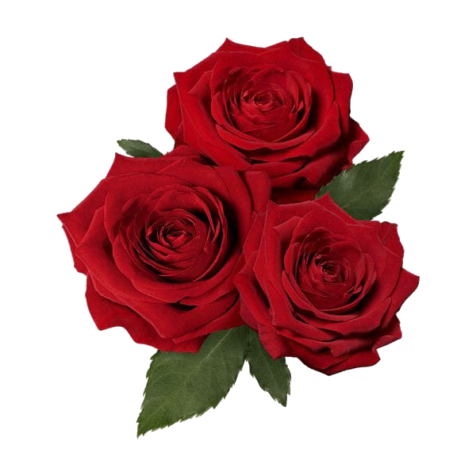
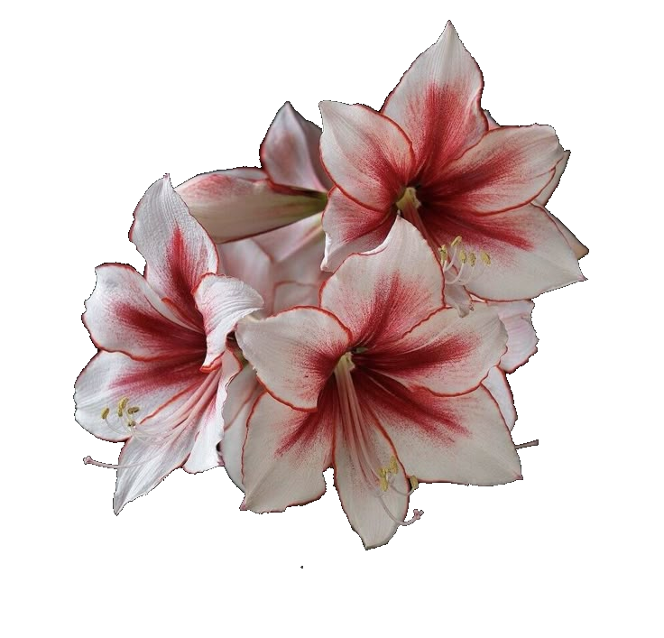
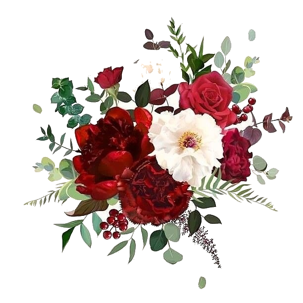

A letter for you
Something that i write for you
To Nafisa Asqiyah Ananta Gunawan, perempuan yang membuatku terpesona saat pertama kali bertemu. Kita memang belum berteman lama, tapi aku ingin kau tahu bahwa ada seseorang yang mengagumimu dari jauh, orang itupun ingin mengetahuimu lebih dalam, karena itu aku ingin mengenalimu lebih jauh.
Di antara sekian banyak pertemuan yang mungkin terjadi dalam hidup, entah bagaimana semesta mempertemukan kita pada waktu yang tak pernah kuduga. Ada sesuatu dari dirimu yang sulit dijelaskan dengan kata-kata, mungkin caramu tersenyum, caramu berbicara, atau sekadar kehadiranmu yang membuat hal-hal sederhana terasa begitu istimewa. Aku tidak pernah menyangka bahwa di penghujung tahun ini, aku akan menemukan seseorang yang mampu membuat pandanganku berhenti begitu lama.
Jika tahun baru adalah tentang permulaan, maka izinkan aku menyimpan satu harapan kecil tentangmu di dalamnya. Aku tidak tahu ke mana waktu akan membawa kita, ataupun apakah perasaan ini kelak menemukan tempatnya. Namun, satu hal yang pasti, mengenalmu adalah salah satu hal indah yang tidak pernah masuk dalam daftar rencanaku. Semoga tahun yang baru membawa banyak kebahagiaan untukmu, Nafisa. Dan jika semesta berkenan, semoga aku masih diberi kesempatan untuk mengenalmu lebih jauh, bukan hanya sebagai seseorang yang pernah kukagumi pada pandangan pertama, melainkan seseorang yang perlahan menjadi bagian dari cerita-cerita baik di hari esok.
From your secret admirer
To you
Some words for you, that came from my heart. I've never been one to express my feelings easily, but there are times when words seem insufficient. I made this website only to tell you this, maybe for you this is dumb or anything, maybe u will even tell ur friends about this but i dont care, u didnt even know who made this.
Jika ada satu hal yang tidak pernah kusangka akan terjadi sebelum tahun ini berakhir, mungkin itu adalah pertemuan denganmu. Dari sekian banyak wajah yang mungkin kutemui, dari sekian banyak nama yang mungkin akan singgah dalam ingatan, entah bagaimana semesta memperkenalkan aku kepada seseorang sepertimu. Seseorang yang bahkan tanpa melakukan sesuatu yang luar biasa, mampu membuat hal sederhana terasa berbeda. Barangkali terdengar berlebihan, tetapi ada sesuatu dari dirimu yang membuatku ingin mengenal lebih banyak, mendengar lebih lama, dan mengingat lebih jauh.

Aku percaya bahwa setiap pertemuan memiliki ceritanya sendiri. Ada yang datang hanya untuk menjadi kenangan, ada yang hadir untuk memberikan pelajaran, dan ada pula yang tanpa disadari membawa warna baru ke dalam kehidupan seseorang. Aku tidak tahu termasuk ke dalam bagian yang mana pertemuan kita nantinya. Namun, jika boleh jujur, aku berharap pertemuan ini bukan sekadar persinggahan singkat yang suatu hari hanya bisa dikenang melalui ingatan. Sebab, sejak pertama kali melihatmu, ada bagian kecil dari diriku yang mulai bertanya-tanya tentang kemungkinan-kemungkinan indah yang mungkin terjadi.

Nafisa, pernahkah kamu menyadari bahwa seseorang bisa terlihat begitu istimewa bahkan tanpa menyadarinya sendiri? Mungkin bagimu, senyumanmu hanyalah senyuman biasa, ceritamu hanyalah percakapan sederhana, dan kehadiranmu hanyalah bagian kecil dari hari-harimu. Namun, dari sudut pandang seseorang yang sedang mengagumimu, hal-hal sederhana itu justru memiliki arti yang berbeda. Ada keindahan yang tidak selalu bisa dijelaskan oleh mata, ada ketertarikan yang tidak selalu membutuhkan alasan, dan ada perasaan yang terkadang tumbuh bahkan sebelum seseorang sempat memahami bagaimana semuanya bermula.

Kini, ketika lembaran tahun baru perlahan terbuka, aku ingin menitipkan beberapa harapan di dalamnya. Aku berharap tahun ini menjadi tahun yang baik untukmu. Semoga setiap langkah yang kamu ambil dipertemukan dengan hal-hal yang membahagiakan. Semoga segala sesuatu yang sedang kamu perjuangkan menemukan jalannya, segala doa yang kamu simpan diam-diam mendapatkan jawabannya, dan segala kesedihan yang pernah kamu rasakan digantikan oleh banyak alasan untuk kembali tersenyum. Aku berharap kamu tidak pernah kehilangan alasan untuk mencintai kehidupan, sekalipun hari-hari terkadang tidak berjalan sebagaimana mestinya.
Untuk diriku sendiri, aku tidak meminta terlalu banyak kepada waktu. Aku hanya berharap diberikan kesempatan untuk mengenalmu lebih jauh. Mengenal cerita-cerita kecil di balik tawamu, memahami hal-hal yang membuatmu bahagia, mendengarkan keluh kesahmu, dan mungkin suatu hari menjadi salah satu alasan mengapa harimu terasa sedikit lebih baik. Aku tidak ingin terburu-buru menamai sesuatu yang bahkan belum sepenuhnya dimulai. Biarlah semuanya berjalan sebagaimana mestinya, sebab aku percaya bahwa sesuatu yang indah tidak selalu harus dipaksakan untuk segera tiba.
Jika pada akhirnya kita hanya menjadi dua orang yang pernah saling mengenal, aku tetap akan menganggap pertemuan ini sebagai salah satu bagian paling menarik dalam perjalanan hidupku. Namun, jika semesta memberikan kesempatan yang lebih panjang, aku ingin menyambutnya dengan sebaik-baiknya. Aku ingin melihat bagaimana cerita ini berkembang, bagaimana waktu memperkenalkan sisi-sisi lain dari dirimu, dan bagaimana sebuah pertemuan sederhana mungkin saja menjadi awal dari sesuatu yang jauh lebih bermakna.
Selamat Tahun Baru, Nafisa.
Terima kasih telah menjadi salah satu hal indah yang kutemukan menjelang pergantian tahun. Aku tidak tahu apakah kamu akan membaca tulisan ini dengan senyuman, tawa kecil, atau mungkin hanya menganggapnya sebagai rangkaian kata biasa. Namun, setidaknya ada satu hal yang ingin kusampaikan: di antara begitu banyak kemungkinan yang ditawarkan oleh tahun yang baru, mengenalmu adalah salah satu kemungkinan yang paling ingin kusyukuri.
Semoga tahun ini mempertemukan kita dengan lebih banyak cerita, lebih banyak percakapan, dan lebih banyak alasan untuk tersenyum.
Dari seseorang yang tidak pernah merencanakan untuk jatuh kagum, tetapi ternyata menemukan alasan untuk melakukannya ketika bertemu denganmu, lastly keep being yourself, keep doing what you love, ill be here to support you even from afar.
— Your Secret Admirer.